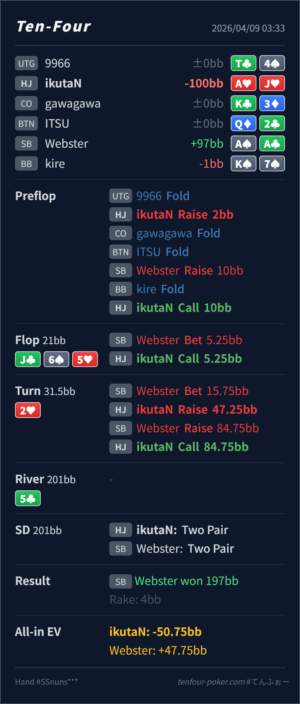

Preflop
良いA♥J♥ は IP の continue 候補として十分強く、4bet より call が自然です。
主論点は、SB の 3bet pot で J♣ 6♠ 5♥ 2♥ に対する 2bar range をどう捉え、IP の A♥J♥ を call bucket と raise bucket のどちらに置くかです。結論は、preflop の continue と flop の call はかなり自然で、いちばん見直すなら turn の raise です。A♥J♥ は強い continue ですが、IP では raise より call の方がレンジに対して収まりやすいです。
A♥J♥A♠A♣J♣ 6♠ 5♥ / 2♥ / 5♣AA-KK-QQ, set, 一部 heart semibluff がかなり残ります。A♥J♥ はそのレンジに対して強い continue ですが、IP なので call でほぼ全 equity を実現できます。A♥ を持っていることで、相手の自然な heart semibluff (A♥K♥, A♥Q♥) を block しています。raise は相手の bluff / semibluff を減らした状態で、強い value にぶつかりやすい構造です。A♥J♥A♠A♣2BB, SB raise 10BB, HJ callJ♣ 6♠ 5♥ / 2♥ / 5♣5.25BB, HJ call15.75BB, HJ raise 47.25BB, SB raise 84.75BB, HJ callA♥J♥ two pair, Villain A♠A♣ wins
良いA♥J♥ は IP の continue 候補として十分強く、4bet より call が自然です。
J♣ 6♠ 5♥良いA♥J♥ は top pair top kicker で、相手レンジに対する強い call bucket です。
2♥ややオーバープレイA♥J♥ は pair + nut flush draw で強い continue ですが、IP なので call の実現値が非常に高いです。
| 論点 | その場で起きがちな見え方 | どこがズレたか | 次回の基準 |
|---|---|---|---|
turn の A♥J♥ raise | top pair + nut flush draw まで付いたので、強すぎて call だけではもったいなく見える | A♥J♥ は確かに強いですが、IP では call で river を見切れます。raise にすると、相手の AK/AQ 系 bluff を下ろしやすい一方、AA/KK/QQ/set に強く残られやすく、レンジ相性はむしろ悪化します。 | IP の pair + nut FD は、まず call で十分実現できるか を先に確認する。raise は protection よりも 何を残して、何を降ろすか で選ぶ |
| turn 3bet を受けた後 | 強い raise-back はかなり value 寄りに見え、全部悪く感じる | SB の raise-back は value 濃度が高いですが、こちらは pair + nut FD で依然として高い equity を持ちます。ここで大きくズレているのは call というより、その前段の raise で pot を膨らませたことです。 | raise が不要だったこと と raise してしまった後の continue は分けて整理する |
| ストリート | その時点の見え方 | 判断の軸 | 評価 | コメント |
|---|---|---|---|---|
| Preflop | SB の 3bet range は blind から HJ open に対してかなり強く、QQ+, AK/AQ, suited broadway が厚いです。 | A♥J♥ は IP の continue 候補として十分強く、4bet より call が自然です。 | 良い | ここは問題ありません。 |
Flop J♣ 6♠ 5♥ | SB の small c-bet には overpair, AK/AQ, backdoor 付き broadway が広く含まれます。 | A♥J♥ は top pair top kicker で、相手レンジに対する強い call bucket です。 | 良い | raise を急がず call に置けているのはかなり自然です。 |
Turn 2♥ | SB の 2bar range は依然として overpair と set が濃く、heart semibluff も一部残ります。 | A♥J♥ は pair + nut flush draw で強い continue ですが、IP なので call の実現値が非常に高いです。 | ややオーバープレイ | raise の発想は分かりますが、レンジに対しては call の方がきれいです。 |
| River |
call で十分に equity を取り切れるか を先に見ると無理な raise が減ります。相手の bluff を消して value に寄せていないか を同時に確認すると精度が上がります。A♥J♥ のような pair + nut flush draw は continue 候補に残りやすく、同じ感覚を弱い draw にまで広げないのが大事です。